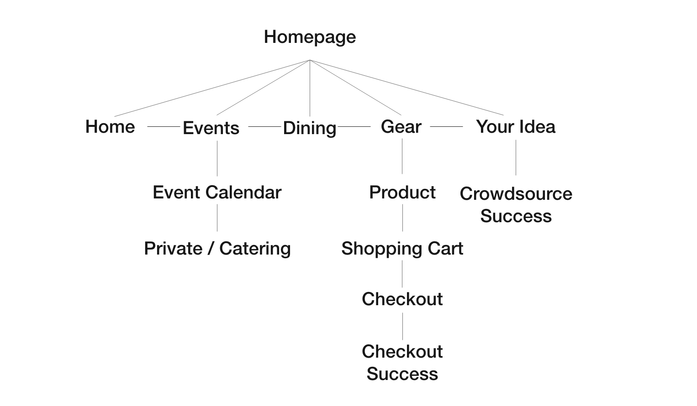
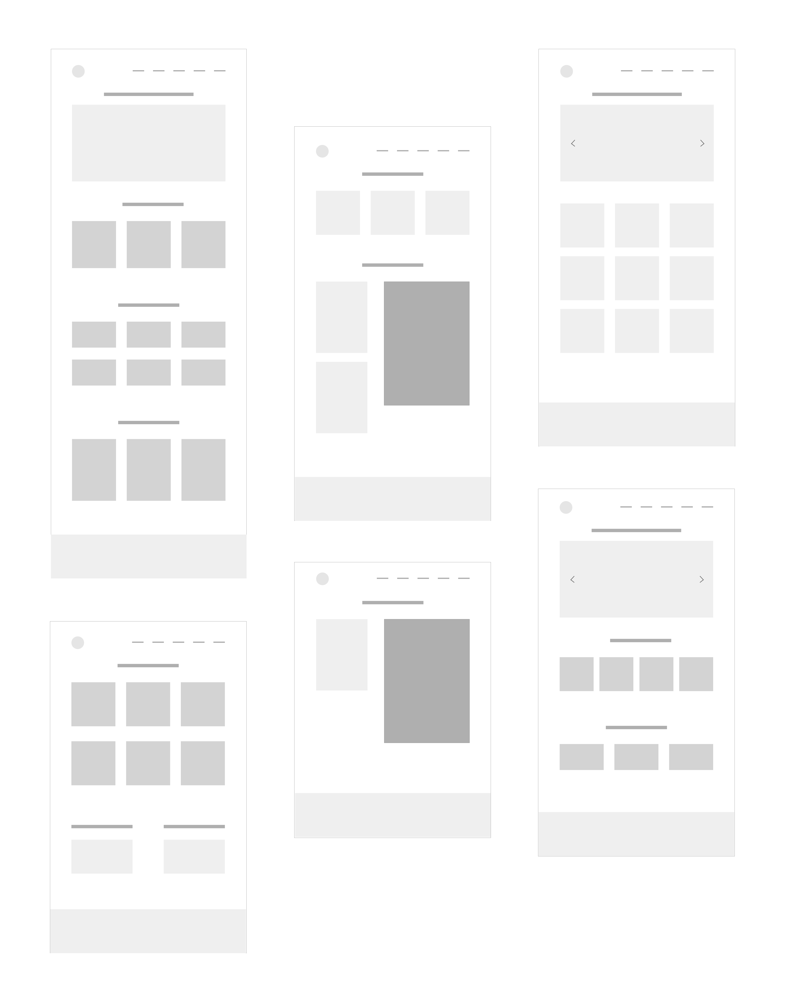
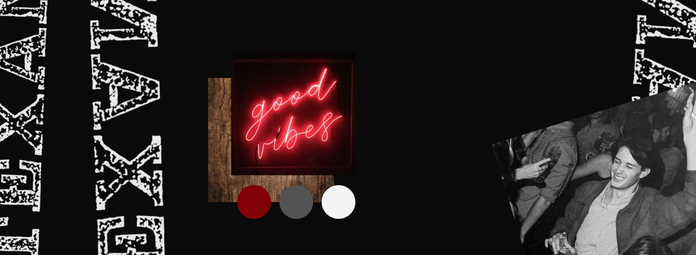
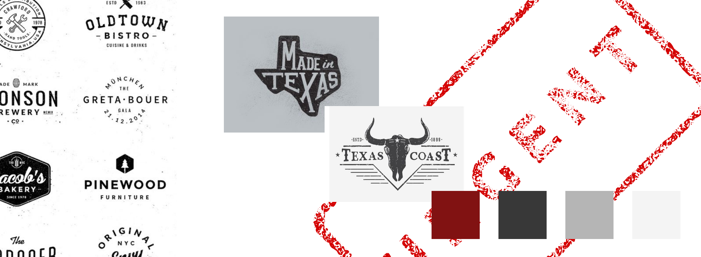
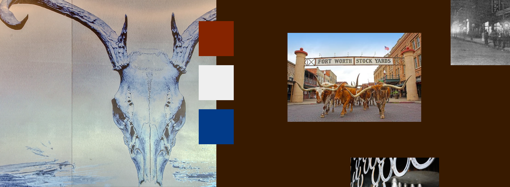
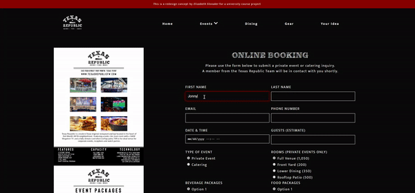
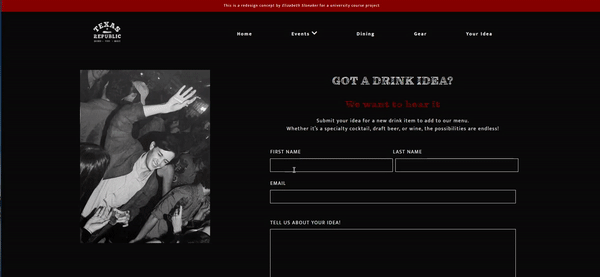
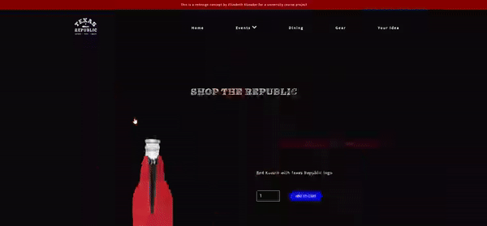

Texas Republic
How redesigning the website’s booking experience, an online store, and implementing crowdsourcing generates engagement across all online platforms
Overview
Texas Republic is a bar and kitchen native to Texas. Located in the heart of Fort Worth's West 7th, they embrace the mantra of everything is bigger in Texas.
*This is a website redesign concept for a course project.
Scope
- Market Research
- Sitemap & Wireframes
- Visual Design
- Email Marketing
- SEO
- Front-End Development
- Responsive Development
Objectives
- Grow online sales
- Spread brand awareness across online platforms
- Convert social media users to site traffic
Results
- Online booking form
- Crowdsourcing form
- Online merchandise store
Market Segmentation
| Target Audience | |
|---|---|
Young adults and millennials between the ages of 21-34, located in the DFW metroplex |
|
| Geographics | Demographics |
|
|
| Behavior | Psychographics |
|
|
| What does this mean for the website? | |
|
|
"Because none of the links work"
Interviewing the Employees
We asked the Texas Republic staff about their current site to better understand its main issues. The interviews highlighted a communication problem with their customers. It became clear that the website needs to provide a better way for customers to contact the business. Addressing this need became a key objective moving forward.
Rafael
“The website looks old with new features. I can’t click the links to get in contact with anyone online, because none of the links worked.”
Ali
“Getting in contact with the owner here is almost impossible. Even in person, so I know it must be hard online."
Nelson
“The website does look crappy compared to other bars, but it works for me. If people are having problems with the links, they figure out some way to book with us regardless."
Sitemap
Wireframes
Low-fidelity

Visual Design
Stylescapes
I designed three stylescapes to determine the site's visual language. I selected "The Modern Cowboy" because it best conveys the unique Western culture of Fort Worth and Texas, but with a modern touch that caters to the young adult target market. The dark tones and neon lights are intended to embody the vibrant nightlife of Texas Republic, while the distressed text and wood textures convey the rustic, weathered charm of Texas.
1. The Modern Cowboy

2. Distressed Texas
3. Stockyard Culture
Developing 3 Features
Event Booking, Crowdsourcing, Online Store
1. Online Booking
Step 1
Customer submits inquiry for private event or catering
Step 2
Texas Republic receives automated email with their inquiry
OBJECTIVE #1:Growing Online Sales
This feature decreases customer frustration with being unable to reach a staff member. Eliminating current customer frustration with booking will facilitate online sales. Furthermore, Texas Republic can systematically and efficiently track all bookings.
2. Crowdsourcing Form
Step 1
User submits idea for new drink
Step 2
Client receives email with submission
Step 3
Automatic email sent to user - email marketing
OBJECTIVE #2: Growing the Brand
Crowdsourcing strengthens Texas Republic’s relationship with their community, by directly involving customers in the business. It creates customer trust in the brand, as they can see the physical results of their involvement.
OBJECTIVE #3: Converting Social Media Followers to Web Traffic
This idea is highly marketable across their social media, a platform which thrives off of user engagement. Therefore, current social media followers can easily be converted to website traffic.
3. Online Merchandise Store
Step 1
Customer clicks on product and adds to cart
Step 2
Mockup of shopping cart page (full function not developed)
Step 3
Mockup of checkout process (full function not developed)
OBJECTIVE #1: Growing Online Sales
An online store creates a new stream of online revenue. Products could include branded apparel, merchandise, and drinkware. Furthermore, expanding into online merchandising fits with the high technology usage and the merch trend of the young adult target audience.
OBJECTIVE #2: Growing the Brand
Wearing the merchandise furthers the Texas Republic brand, because it increases the brand's awareness and exposure amongst the target audience.
OBJECTIVE #3: Convert Social Media Followers to Web Traffic
Store products can be easily advertised on social media. Instagram and Facebook both have features suited for businesses to sell and market their products, such as direct linking to a product page.
Results